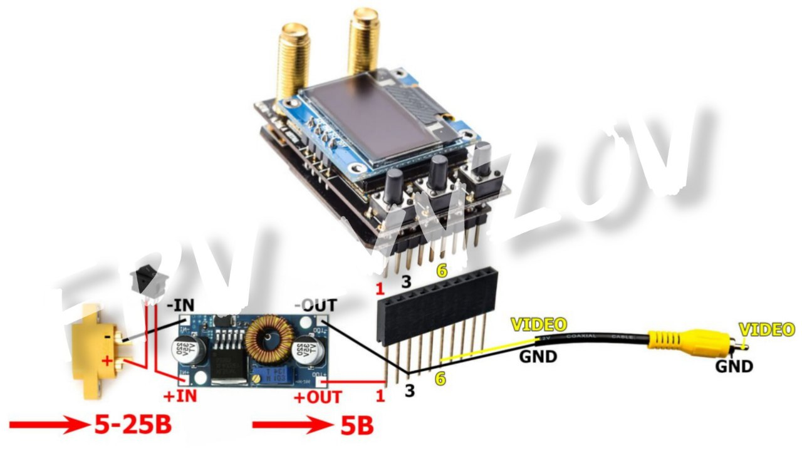

Прошивка Юниор (Junior) от G-13
ℹ️ Прошивка для простого управления видео_каналами с пульта. Позволяет переключать заранее настроенные видеоканалы в полете, до 10 каналов в рамках сетки VRX.
О прошивке ЮНИОР
Совместимое оборудование
:
Видеоприемники (на выбор):
- SKYZONE Steadyview V3.3,
- SKYZONE SteadyView X 5Ghz,
- SKYZONE SteadyView X 5.8 Ghz,
- Foxeer Wildfire,
- 5.8 VRX «Аналогов нет»,
- 1,2 VRX «Аналогов нет»,
- FT1200,
- FT3500.
Приемник управления (на выбор):
- любой ELRS,
- любой TBS.
Инструкции
по прошивке
📎
🎞 На фото видеоприемник упакован в
(лайфхак для технического специалиста)
📦
Кейсы для готовых решений G13
#ПРОШИВКА
#FPV
#техник_fpv
#видео
#Прошивка_для_переключения_видеоканалов
Это вложение из поста t.me/platforma_fpv/2/1583
Тестер для видеоприемников - модели для 3D-печати.
📝
Это вложение из поста t.me/platforma_fpv/35/1580
Тестер для видеоприемников - модели для 3D-печати.
📝
Это вложение из поста t.me/platforma_fpv/35/1580

Схема сборки тестера для видеоприемников.
Это вложение из поста t.me/platforma_fpv/35/1581

Тестер для видеоприемников от Команды
ℹ️ Тестер для видеоприемников - устройство для подключения видеоприемников из очков к внешним экранам c аналоговым входом* (монитор, FPV-монитор, телевизор).
*Если устройство имеет только цифровой вход, то понадобится конвертер AV-HDMI.
Можно использовать при настройке и тестирования функции переключения каналов со стороннего источника (пульт).
Чтобы каждый раз не вставлять и вынимать приемник из очков, или когда нужно вывести изображение на большой экран (телевизор) не подключая очки целиком.
Пример использования:
, на фото видеоприемник упакован в данный тестер.
Для сборки понадобится:
- 1 шт.;
2. Разъем штыревой PBS-1x10L (2,54) - 1 шт.;
3. Разъем XT60E-M - 1 шт.;
AV-провод "тюльпан" мама или папа - 1 шт.
4. Кнопка двухпозиционная - 1 шт.;
5. Понижающий преобразователь напряжения - 1 шт.;
6. Винт М3х8 - 4 шт.
📎
#3Д_для_периферийных_устройств
#Ремонт_Мастерская
#техник_бпла
Веб-страница создана автоматически на основе поста пользователя ПЛАТФОРМА_FPV